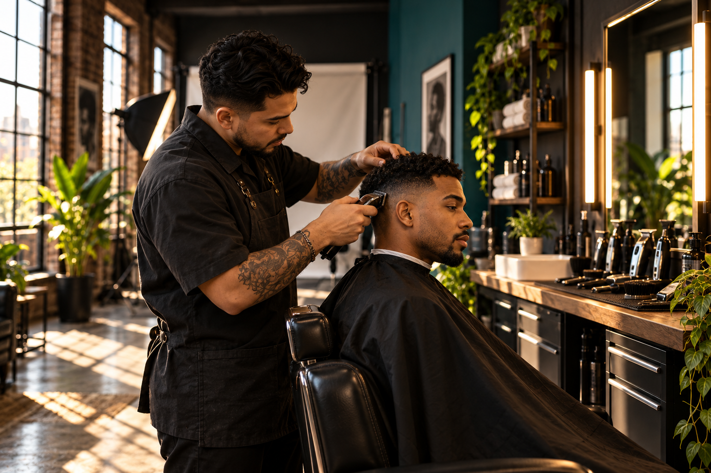

Photography
Portraits, graduation photographs, and event images offer different ways to tell a personal story. Explore the photography page to see how expression, light, and setting can work together.
Explore photography →NICHOLAS STARKS / PRIMAL STUDIO
Photography and barbering connected through personal style, thoughtful details, and individual expression.

TWO PRACTICES. ONE PERSPECTIVE.
Welcome to Primal Studio. I’m Nicholas Starks, a barber studying design and photography. This portfolio brings together two creative practices that share a common purpose: helping people express who they are. A haircut shapes how someone presents themselves. A photograph captures that presence and gives it a lasting form.
I pay attention to texture, shape, lighting, and individual style. Whether I am considering the outline of a haircut or the composition of a portrait, those details guide the work. My goal is to create images and looks that feel personal, approachable, and connected to the person in front of me.
Portraits, graduation photographs, and event images offer different ways to tell a personal story. Explore the photography page to see how expression, light, and setting can work together.
Explore photography →
Barbering begins with understanding someone’s style. Explore the barbering page for a look at shape, texture, and the small details that make a haircut feel considered.
Explore barbering →LET’S TALK
Tell me whether you’re interested in photography or barbering, what you want to achieve, and any dates you are considering. We can discuss the details directly. Sending an inquiry does not confirm an appointment.
Contact NickEmail setup pending: add your public address in js/script.js.
Long Beach, California is shown as a general area for this draft. A studio address has not been published.
Use Contact Nick and describe the service, your goals, and your preferred timing. The email link will work after the public email address is configured.
Mention both interests in your inquiry so we can discuss the idea. Availability and the scope of the work will be confirmed directly.
Prices and availability are not published in this draft. Contact Nick to discuss your project.